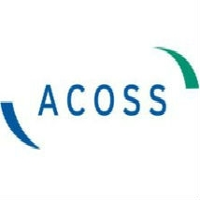
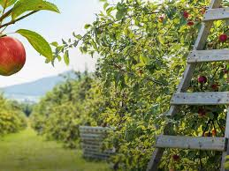
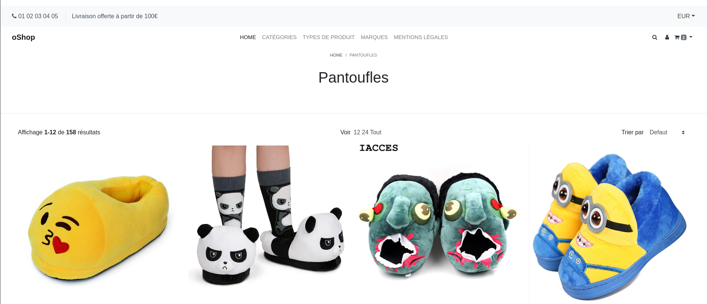
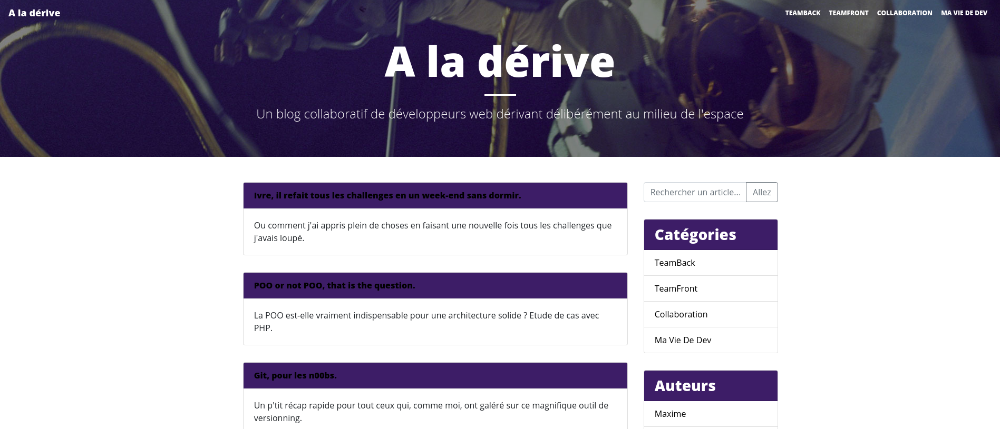
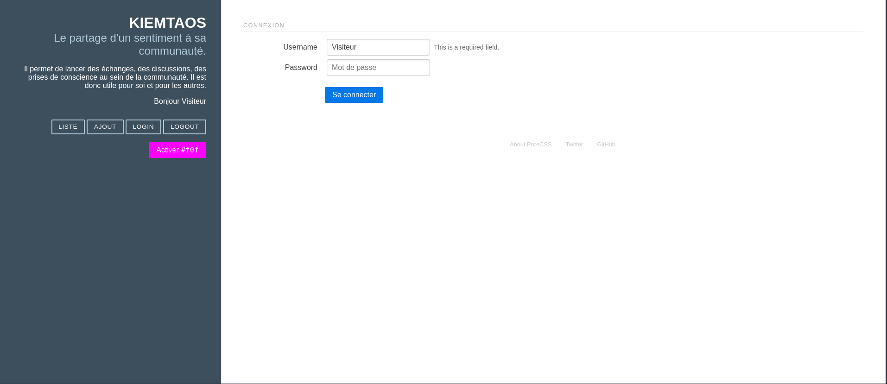
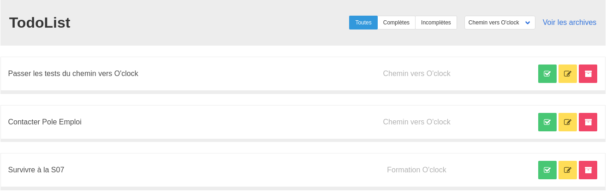
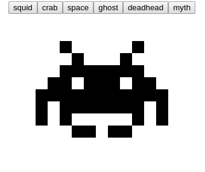

Formations
-
De 2015 à 2017, j'ai fait un Bac Techno STI2D option Systèmes d'Information et Numérique. Cette option nous amenait à étudier les méthodes de transmission avec le numérique. J'y ai étudier aussi les cartes électroniques (les composants et leur rôle dans la carte).
-
De 2017 à 2019, j'ai fait un BTS Systèmes Numériques option A : Informatique et Réseaux. Dans ce BTS scindé principalement en 2 parties (partie dèv logiciel et partie réseaux), en dèv logiciel on apprenait les langage C/C++, le concept de programmation orienté objet, les classes etc... En réseaux (partie très théorique), j'ai vu l'adressage ip (plage d'adresse disponible), différent protocoles (ARP, IMCP, TCP/IP), on a aussi vu la plannification et la gestion de projet.
-
Du 09/03/2020 au 15/06/2020, formation de développeur web avec l'école O'Clock en 100% à distance de chez moi. Durant la formation, j'ai appris les langages côté front (Html, CSS, JavaScript) et côté back (PHP et MySql) mais aussi des Framework (Bootstrap en front et Lumen en back), j'ai également vu plusieurs concept tel que la programmation Orienté Objet, l'architecture Model Vue Controleur, les API et aussi GIT le logiciel de versionning.
Expériences
Acoss Nancy

Dans le cadre de mon BTS, j'ai effectué un stage me permettant d'acquérir de l'expérience mais aussi de rentrer plus en profondeur dans le monde de l'entreprise. Le stage c'est fait à l'Acoss Nancy, une entreprise qui gère et traîte informatiquement les dossiers des clients Urssaf. Ma place en tant que stagiaire se situais dans le service Maitrise d'oeuvre ou mon maître de stage m'à confier comme sujet de faire la refonte du site qui regroupait les applications nécessaire au traîtement des dossiers. La refonte du site se faisait à l'aide d'Angular, j'ai pendant une semaine et demi et un peu avant le stage pratiquer Angular car je le rappel je n'avais à par Html/CSS que j'ai appris par moi-même aucune connaissance en développement web avec mon BTS qui était orienté dèv logiciel et réseaux. J'étais avec une autre stagiaire qui était elle en licence informatique, nous avons d'abord fait le tutoriel la tour des héros qui avait pour but de nous amener à découvrir les notions/concepts d'Angular comme les routes, composants, modules etc..., puis nous nous sommes lancé dans le sujet. Ce stage m'à conforter dans l'idée de vouloir faire du développement web et à surtout concrétiser mon projet d'avenir qui était de trouver une formation en dévelopement web après le BTS.
Après l'obtention de mon BTS, ce que j'avais envie de faire était de me m'inscrire dans une formation de développeur web, j'ai cherché du travail en attendant de trouver la formation qui me correspondra le mieux. J'ai lu dans le courrier de l'ouest que la société Candé Fruit possède 3 verger, à Candé au Lyon d'Angers et à Landremont et qu'ils cherchaient pour chacun des vergers 90 personnes environ pour cueillir les pommes. J'ai reçu une réponse positive de la par de Candé, mon contrat CDD commençait le 22 Août et se terminait quand toute les pommes étaient rammassées, ça dépendait des variétés de pomme qui prenaient plus ou moins de temps à mûrir. Je faisais 7H/jour pour ma première semaine et 8H/jour les semaines suivantes. L'objectif était de rammasser les pommes et de les mettres dans des palox qui sont des grosses boîtes de 1m par 1m, il fallait en faire 3/jour ce qui était assez dur, j'en faisait 2 2 et demi les premières semaines puis 3 les dernières. On cueillait principalement au sol, mais il m'est arriver de cueillir sur machine pour attraper les pommes en hauteur. Mon contrat à pris fin le 30 Septembre.
Candé Fruit

MacDonald's
Toujours en recherche de formation et après avoir finis mon contrat avec Candé Fruit, je cherche à nouveau un job, MacDo s'est souvenu que j'avais postulé sur leur site et ils m'ont rappelé pour définir avec moi mes disponiblilité, j'ai été accepté pour une période d'essai de 2 mois en tant qu'équipier polyvalent. Le contrat à commencer le 05/11/20 et est un CDI de 24H/sem en temps partiel, j'ai eu 3H de formation en cuisine. L'équipier polyvalent est capable de savoir à terme tout faire dans le restaurant, de l'encaissement, de la préparation de sandwich, cuisson, prendre les commandes au drive etc... Au début j'étais principalement sur le garnissage des burgers, puis j'ai fait la plonge, le nettoyage, le service à table et la préparation des boissons et des glaces. La fin de ma période d'essai c'est achevé le 02/01/2020. J'ai finis par touvé O'Clock une école faisant des formations en développement web, j'ai commencé le 09/03/20 voir la rubrique Formations.
Travaux
OShop

Description : OShop est une conception de boutique en ligne permettant d'acheter des articles en fonction d'une catégorie, marque, type de produit sélectionner, vous pouvez voir sur la page d'accueil 5 catégories de produits, ainsi que les produits associés à cette catégorie, vous pouvez voir également la fiche du produit en détail.
Technologie et concept utilisés:
OBlog

Description: OBlog est une conception de site permettant de mettre des articles, c'est une sorte de blog collaboratif, les articles sont listés selon une catégorie et un auteur, vous pouvez également sélectionner un auteur pour voir tout les articles qu'il a écrit, ainsi qu'une catégorie pour voir quel article y est associé.
Technologie et concept utilisés:
Kiemtao

Description: Kiemtao est un site permettant de s'inscrire à un formulaire pour ajouter s'est humeurs, un mode #fof disponible(comme le mode sombre sur twitter mais flashy).
Technologie et concept utilisés:
TodoList

Description: Le site TodoList permet d'ajouter des choses à faire, vous pouvez les archiver, les supprimer, c'est une sorte de pense-bête ou d'aide mémoire.
Technologie et concept utilisés:
Invaders

Description: Space Invaders permet de choisir son modèle à afficher en cliquant sur des boutons.
Technologie et concept utilisés: